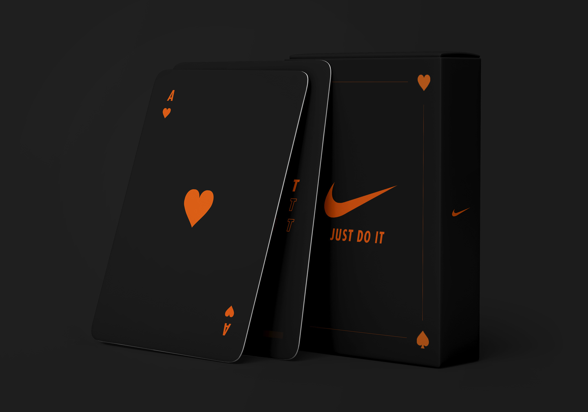

Mon CV
Ce site web a pour objectif de mettre en forme mon profil et de présenter mes différents objectifs pour l'avenir. Via différents onglets, vous pourrez prendre connaissance de mes formations, expériences et une partie de mon travail.
Mon profil
Actuellement étudiant en première année de Bachelor à l'école La Manu située à Compiègne, j'étudie le
Design UX/UI, le Design Web ainsi que la programmation et le développement.
J'ai obtenu mon BAC Scientifique option Maths il y a maintenant 3 ans et depuis, j'ai emprunté
différents cursus, scolaires et professionnels.
Mes différentes expériences scolaires et professionnelles m'ont permis d'étayer ma vision et de
m'orienter dans une voie qui aujourd'hui me convient pour l'avenir.
De nature réservée et plongée dans diverses réflexions, j'aspire à apporter une plus-value
créative et humaine dans mon travail.
LOISIRS
Passionné de sport, je pratique depuis petit le football, en loisir mais aussi en club pendant plusieurs
années. J'ai également joué pendant 4 ans dans le club de basket-ball de mon collège (2013-2017).
La cuisine, les jeux vidéos, et la menuiserie sont également des activités qui animent mes temps
libres.
PASSIONS
La musique représente pour moi une partie importante de ma vie et de mes activités. D'ici quelques
années, j'aimerais en apprendre davatange et commencer à composer de mon côté.
En parallèle, la littérature et la philosophie me passionnent et m'animent. Des auteurs comme
Cioran, Camus, et surtout Kierkegaard, influencent ma vision du monde.
AVENIR
J'aimerais orienter mon travail au plus possible dans une dynamique créative et artistique. Les studios
de jeux vidéos m'attirent et j'aimerais réaliser mes stages dans un grand studio : Asobo, Ubisoft...
Autrement, le monde de la musique m'intéresse aussi grandement, j'aimerais idéalement travailler
en collaboration avec des artistes, des studios, ou contribuer au développement
d'applications/sites en rapport avec le monde musical.
Mes diplômes et formations
- EN COURS : BACHELOR DESIGN & PROGRAMMATION LA MANU COMPIÈGNE
- FORMATION DE NIVEAU 1 D'ENCADRANT FOOT NIVEAU U8-U9, 2023
- SERVICE CIVIQUE, 2021
- BACCALAUREAT SCIENTIFIQUE (option Maths) MENTION BIEN, 2020
- DIPLOME DE SECOURISME DE NIVEAU 1 (PSC1), 2019
Mes expériences
FL CRÉATION, BREUIL-LE-SEC, MAI 2023 - AOUT 2023
Mission d'intérim de 4 mois
Durant cette mission, j'ai pu apprendre le fonctionnement de différentes machines d'usinage, le
contrôle qualité et quantité
des stocks sortants, la maintenance des machines, et la gestion des
flux dans la zone usinage de l'entreprise.
BTS PAYSAGISTE, SEPT 2022 - AVRIL 2023
Première année de BTS Paysagiste
Apprentissage global du domaine végétal et botanique.
Réalisation graphique de jardins et participation à plusieurs projets de plantations.

BASIC-FIT, JANVIER 2022-MARS 2022
Agent d'accueil
Gestion des inscriptions clients, entretien des machines, ouverture et fermeture de la
salle.
AMAZON, SEPT 2021 - NOVEMBRE 2021
Mission d'intérim
Assignation au "Dock" de l'entrepôt : chargement et déchargement des camions.
SERVICE CIVIQUE, JANVIER 2021-JUILLET 2021
Accompagnement et tutorat d'élèves en décrochage scolaire dans un collège
Participation à la vie culturelle et sportive de l'établissement
Organisation des épreuves du brevet
Portfolio
FLAT DRAWING


Projets reprenant notamment différentes covers d'albums, dans un style plat et
géométrique.
Réalisé avec Photoshop.
MOCKUP



Projets d'incrustation sur Mockup de différentes réalisations et concepts. Jeu de cartes
Nike, Boite de médicaments inspirée de l'album "Trinity" de Laylow, Savon inspiré de l'album "Une main
lave l'autre" d'Alpha Wann...
Réalisé avec Photoshop.
DIGITAL DRAWING


D'autres réalisations Photoshop sans thème précis. Reprise de l'affiche du film Drive, dessin d'une photo d'un concert de Kanye West...
Contact
- 06 32 35 64 46
- lorisschlatter@gmail.com
- 1 Route de l'Hopital
- 60140, Labruyère